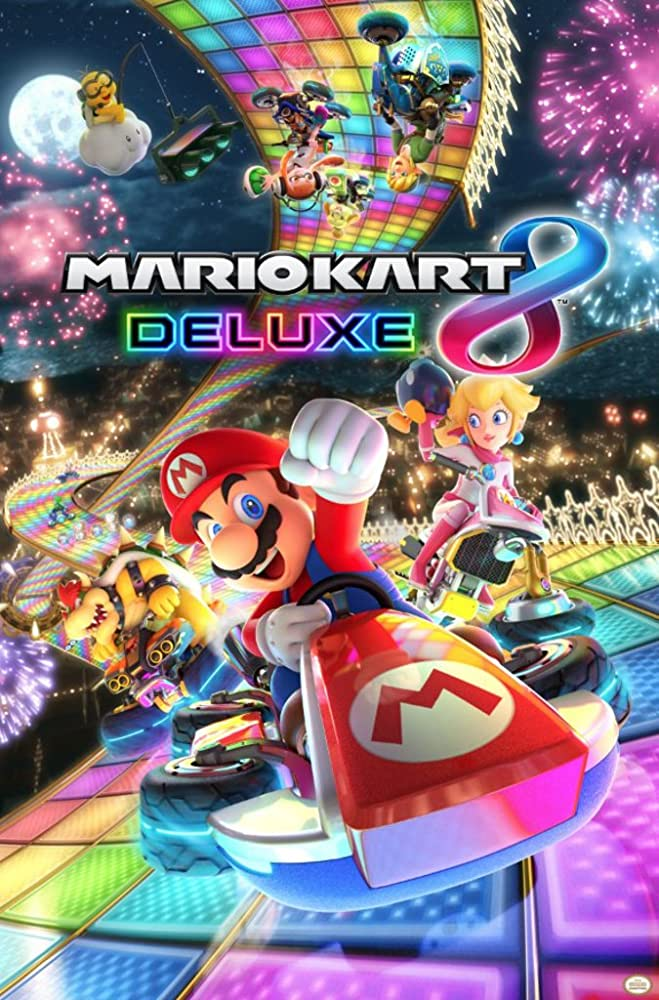

Mario Game Catalog



Mario Kart 8 Deluxe is the most current mario kart game. In my opinion it doesnt quite live up to Mario Kart Wii, this is still a great game that is accessible to many. The Nintendo Switch console brings multiplayer functionality to it's peak, making this a great option for having fun with friends.